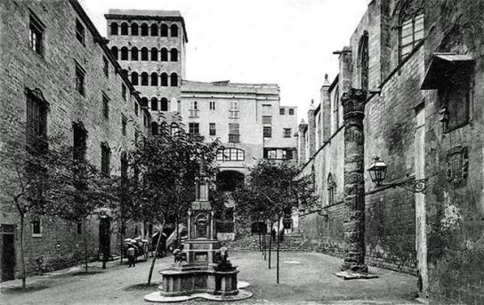

"Conforme bajes caminando por las piedras de la estrecha Baixada de Santa Clara, a tu izquierda se alzarán los muros que guardan la memoria de los reyes."
"De frente, imponente hierro encontrarás, y sólo si miras a través de su ojo serás tú el que verás."
"Deberás mirar desde dónde aún queda algo tan antiguo como yo. Ahora que sabes dónde mirar, la siguiente pista podrás encontrar."